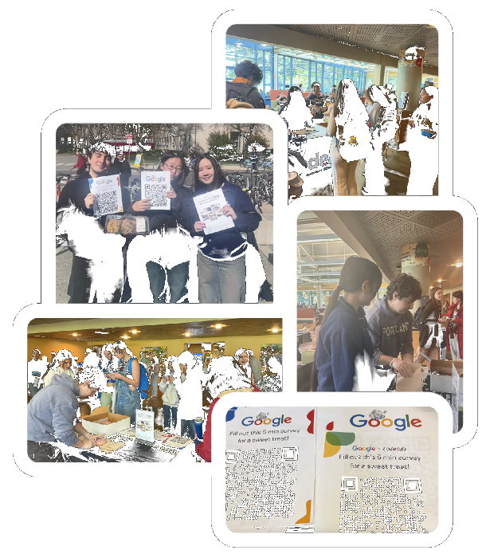

The problem
Google Careers' location page was losing candidates before they ever hit apply.
The page was clean and well organized, but it was built to inform rather than to make someone get a feel for what it was like to work and live there. It told candidates what jobs existed without telling them what life at that location actually looked like: no sense of commute, neighborhood, or daily routine. Candidates got a row of job listings and a small photo carousel instead.
The investigation
What 180+ people told us (and what they didn't)
We ran a survey across five universities—UC Davis, UCLA, UCI, Georgia Tech, Boston University. Tabling, Slack, Discord, campus flyers. We conducted 12 moderated interviews. We tested nine different page variations to see what actually moved the needle.

- 180+survey responses
- 5universities surveyed
- 12moderated interviews
- 9page variations tested
“It doesn't scream ‘Google’ like other sites do.”
The survey told us the page felt sterile, overwhelming, off-brand.
negative word associations: sterile, bland, lifeless
drop-off among highest-intent candidates after viewing
left with low to moderate confidence in understanding the location
Gemini helped synthesize 180+ open-ended responses into clusters and patterns. The question remained: “What do candidates want? And why?”
“There's a lack of information and images. It makes it hard to actually picture yourself working there.”— High-intent, early-career candidate
The discovery
Two cohorts. Two completely different mental models.
Entry-level candidates wanted a lifestyle. Experienced hires wanted logistics.
Entry-level candidates cared about lifestyle, city culture, and social scene. What does daily life actually feel like?
LifestyleCity cultureSocial scene
Experienced professionals cared about logistics, commute times, and family relocation.
LogisticsCommute timesFamily relocation
Google wanted one page for both, but they weren't reading it the same way. This split surfaced in how people talked about weighing relocation through both the interviews and surveys. To get experienced hires into the study at all, we reached into our own networks instead of waiting on a formal recruiting pipeline, which gave us more candid responses than a screened panel would have.
One finding surprised Google the most
We had to lead with place, not just workplace.
Across both cohorts, candidates ranked city culture and proximity to loved ones above office amenities.
The patterns that emerged
Three key friction points: navigation, authenticity, decision making
-
01
The map wasn't helping anyone navigate.
We tested it. Users got confused, the map wasn't functional or intuitive and it was hard to find specific locations. Clients told us: interactive maps are a consistent pain point across their entire product suite, but implementing search bars was not feasible here. We had to get creative.
-
02
The content informed but didn't inspire.
None of that “Google innovation” was being conveyed. One candidate wrote: “Putting pictures at the top doesn't give me any idea of what it would be like to work there.” Images alone weren't enough. They needed real voices. Real context.
-
03
Candidates left without enough to decide.
The top three things they needed—daily logistics, lifestyle fit, living conditions—weren't on the page.
From insight to direction
A handoff document that became the design brief
We used the iceberg model and five whys across FigJam boards to move from raw data to direction. Those findings became a strategic framework: a handoff document mapping candidate pain points directly to UI strategy within Brightspot's CMS constraints.
Presented directly to Google, it became the design team's foundation for the sprints that followed.
A peek into the document:
Beyond research
Research showed candidates couldn't picture themselves at this location, so the next step was a mid-fi exploration the design team built from.
The original page led with nine job tiles and a thin paragraph of copy. That's a directory, not a living, breathing workplace. Candidates couldn't picture themselves there.
Early concepts that lived outside Brightspot were explored in Gemini and Figma Make: campus tours, interactive commute maps, salary transparency hubs. This was a great starting point to make abstract concepts tangible enough to convey and pitch early ideas.
The constraint
Brightspot's constraints became our creative ally.
80% had to work within Brightspot's module system. 20% could be custom-engineered. The 80/20 budget meant designing mid-fidelity components that worked within its module system while identifying where a custom 20% would create the most impact.
Working with Brightspot forced us to solve the problem through content, information hierarchy, and editorial choices, and that made us think smarter. Working within the constraint made us more disciplined and more creative, and pushed us to create components that were intentional.
The custom component built directly from research.
‘One Workplace. Countless Stories.’ was designed specifically to put employee voice front and center in an interactive way. Standard testimonial blocks are large, heavy, and slow to read through. Candidates scroll past them. But we needed candidates to engage with real stories, not just read about them. So this component lets users click through, interact with media, and build a felt sense of what working there actually feels like.
So… did it work?
Confidence shifted from low-to-medium to medium-to-high.
We ran 12 user acceptance testing sessions tracking three metrics:
increase in confidence. Jumped from low-to-medium to medium-to-high. Candidates left understanding the location.
increase in time on the new page, compared to the original. Users lingered in the “One Workplace” section longer than anywhere else.
Intent to apply rose to 31% versus 12% on the original.
| Measure | Original | Redesign |
|---|---|---|
| Confidence in understanding the location | Low to medium | Medium to high |
| Time on page | Baseline | 23% longer |
| Intent to apply | 12% | 31% |
The barriers that remained—imposter syndrome, hiring anxiety—live outside what design can solve. Knowing that boundary is part of doing honest research. We fixed what we could. We were honest about what we couldn't.
Looking back
Reflection
- Looking back, the biggest lesson was about listening. Not just to what people said, but how they were thinking underneath what they said. Candidates said “I want information.” What they meant was “I want to feel like I belong here.” That's two different problems.
- Gemini got great at clustering 180 responses into patterns. But it would have missed that shift from what to why. The tool is excellent at processing volume. It's terrible at noticing the thing nobody thought to ask yet. That's still the human job.
- Getting better at asking those questions—before diving into analysis—that's the skill to keep sharpening.

“The Employment Brand team at Google has been incredibly impressed with the thoughtfulness, expertise, and design-forward approach shown in the work for our Careers location pages. The team came to every meeting prepared and concise, asked insightful questions, and delivered exactly what we expected.”— Amy Lynam, Integrated Marketing Manager, Google